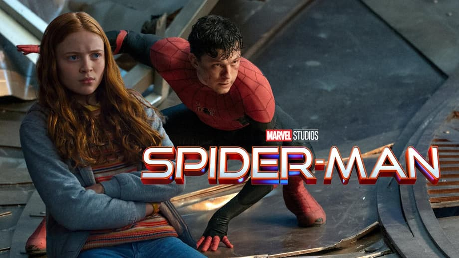

Notre critique de Good Will Hunting : pourquoi on kiffe le cinéma !
Notre critique de Good Will Hunting : pourquoi on kiffe le cinéma !

Wuthering Heights : l'obsession amoureuse revue par Emerald Fennell !

Une actrice de Stranger Things rejoint le casting du prochain Spider-Man !

Oscars 2025 : Le palmarès complet des gagnants enfin révélé !